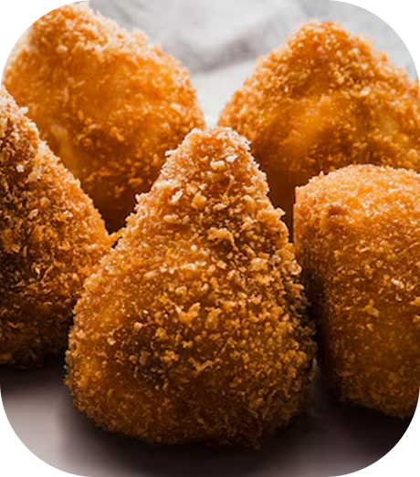

Receita destaque
Coxinha de mandioca
- 4 colheres (sopa) de manteiga
- 20 g de caldo de galinha sem glúten
- 300 ml de leite
- 700 g de mandioca bem cozida e amassada ou triturada no processador
- 3 xícaras de creme de arroz, ou um pouco mais
- 1 ovo
- Sal a gosto
- Fubá para empanar
Glúten/Lactose
-
Coxinha de mandioca
A coxinha de mandioca sem glúten é uma opção deliciosa e mais leve para quem quer aproveitar esse clássico salgadinho sem preocupações. Feita com massa de mandioca macia e recheio saboroso, ela é perfeita para lanches, festas ou qualquer hora que der vontade de algo gostoso e diferente.
Ver Mais -
Bombom de Morango

O bombom de morango sem lactose é uma sobremesa irresistível para quem quer aproveitar esse doce clássico sem preocupações. Preparado com morangos frescos e um recheio cremoso feito com ingredientes livres de lactose, ele é perfeito para sobremesas, festas ou para matar a vontade de um docinho especial a qualquer hora do dia.
Ver Mais -
Torta salgada
A torta salgada sem glúten é uma alternativa saborosa e versátil para quem busca aproveitar esse clássico da culinária sem restrições. Com massa leve e macia, feita com farinhas especiais, e recheios variados que vão de frango desfiado a legumes frescos, ela é ideal para refeições rápidas, lanches ou festas, levando praticidade e muito sabor ao dia a dia.
Ver Mais -
Pão de queijo

O pão de queijo sem queijo e sem lactose é uma versão inovadora desse clássico mineiro, ideal para quem busca sabor e leveza sem abrir mão da tradição. Feito com polvilho e ingredientes vegetais que trazem textura macia e sabor marcante, ele é perfeito para cafés da manhã, lanches ou qualquer momento em que bate aquela vontade de um pãozinho quentinho e especial
Ver Mais -
Torta de banana
A torta de banana sem lactose é uma sobremesa deliciosa e leve, perfeita para quem quer saborear esse clássico sem restrições. Preparada com bananas maduras e massa macia feita com ingredientes livres de lactose, ela combina sabor, praticidade e um toque caseiro, sendo ideal para cafés, lanches da tarde ou para adoçar qualquer momento especial.
Ver Mais -
Bolo de laranja

O bolo de laranja sem glúten é uma opção leve e cheia de sabor para quem quer apreciar esse clássico da confeitaria sem restrições. Feito com farinhas especiais e suco natural de laranja, ele fica fofinho, aromático e irresistível, sendo perfeito para cafés da manhã, lanches ou para adoçar momentos especiais de forma mais saudável. Ver Mais
-
Red Velvet

O bolo Red Velvet sem glúten e sem lactose é uma releitura elegante e deliciosa desse clássico americano. Preparado com farinhas especiais e ingredientes livres de lactose, ele mantém a textura macia e o sabor marcante, com um creme suave igualmente sem lactose. Perfeito para festas, comemorações ou para adoçar o dia com um toque sofisticado e inclusivo.
Ver Mais -
Pão sem glúten

O pão sem glúten é uma opção deliciosa e saudável para quem busca alternativas sem restrições. Feito com farinhas especiais, ele é macio por dentro e crocante por fora, perfeito para acompanhar refeições ou ser saboreado com um recheio de sua preferência.
Ver Mais